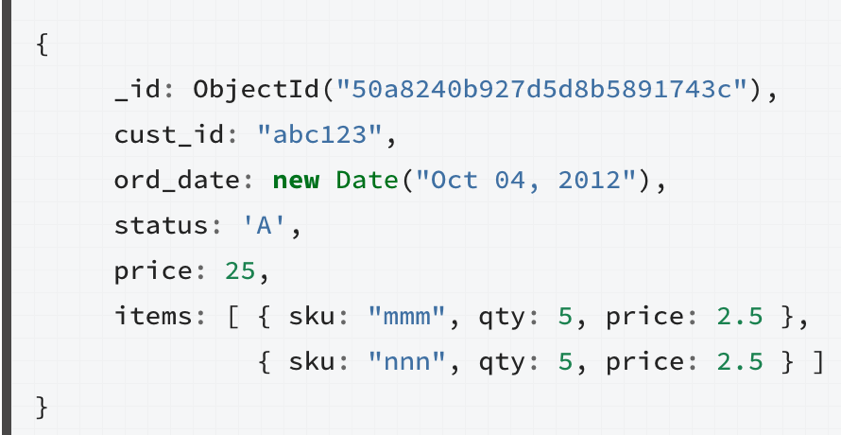

MongoDB Advanced
Module 6 - Big Data
By Almog LaktiviBig Data Capabilities
- With sharding, mongoDB can reach to large volumes of data which may cause to processing time problems
- To solve this issue mongoDB implemented the .mapReduce command
- Map-reduce is a data processing paradigm for condensing large volumes of data into useful aggregated results
- Map-reduce developed to process massive amounts of data efficiently
- Have finalize function which runs after each reduce
- Supports incremental calculation

- Map function – extracts the desired value from the document by emit function
- Reduce function – aggregate all the outputs of map function into one object
- .mapReduce can return the results of a map-reduce operation as a document, or may write the results to collections
- The input and the output collections may be sharded
Example
Example
var mapFunction1 = function() {
emit(this.cust_id, this.price);
};
var reduceFunction1 = function(keyCustId, valuesPrices) {
return Array.sum(valuesPrices);
};
db.orders.mapReduce(
mapFunction1,
reduceFunction1,
{ out: "map_reduce_example" }
)
Excercise Time
|
 |
Any questions?